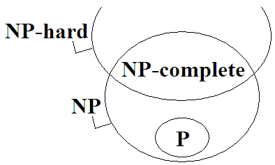

Algorithm Analysis
Algorithm Analysis
演算法可以切開為兩個部分：演算法設計、演算法分析。
演算法設計：製造演算法。演算法設計目前已經有一些經典手法，例如Dynamic Programming、Greedy Method等等。
演算法分析：針對特定演算法，精確計量時間複雜度和空間複雜度。演算法分析會用到很多數學知識。下面這兩本書內容很詳細，我想應該不太需要再重複整理一遍。
http://aofa.cs.princeton.edu/home/
http://soltys.cs.csuci.edu/blog/?page_id=404
大家加油吧！
以下章節是隨興所至談天說地，參考看看就好。
時間複雜度
想要描述一個演算法執行速度有多快，直覺的方式是測量演算法計算時間。但是由於執行時間深受機器規格與實作方式影響，難以放諸四海皆準，因此學術上傾向於統計演算法步驟數目。
現在大家採用的方式是統計演算法步驟數目。但是由於每個步驟的執行時間都不一樣，加減較快、乘除較慢，因此這也是不那麼準確的方式。更何況，實際上的運作過程，是將程式碼編譯成機器碼，然後實施Instruction Pipeline。指令數量、演算法的步驟數目，兩者根本沒有絕對關係。
然而目前也尚未找到更好的方式，於是大家將就著用。
時間複雜度標記法
時間複雜度的標記法，是幾十年前的數學家發明的方式：大寫的英文字母O函數，代表演算法執行步驟數目上限；大寫的希臘字母Ω函數，代表下限；大寫的希臘字母Θ函數，代表同時滿足上限與下限（不多不少剛剛好）。這些都是假設n足夠大、甚至無限大。又由於n足夠大，所以我們只需比較函數的最高次方項。另外我們省略了最高次方項的係數。
因為省略了很多東西，所以時間複雜度往往無法正確反映演算法的快慢。例如n=100的情況下，有可能O(n^3)的演算法表現的比O(n^2)好。例如兩個同為O(n)的演算法可能不一樣快，n大時甲快、n小時乙快。
時間複雜度標記法，也完全忽略了I/O處理和記憶體管理的問題。要是資料結構複雜一點、龐大一點，讀取資料就會變慢。
時間複雜度標記法，也完全忽略了程式語言特性和平台特性。平平同一個演算法，用C寫執行較快，用Java、Python寫執行較慢。因為後者的記憶體管理機制更加複雜，而且牽扯到系統運作架構。
時間複雜度標記法再怎麼不可靠，也比不上實作的不可靠。平平同一個演算法，不同人寫出來的程式碼，執行效率都不一樣，相差十倍都有可能。
然而目前也尚未找到更好的方式，於是大家將就著用。
輸入資料
輸入資料常常影響時間複雜度。舉例來說，當輸入資料已經排序完畢，此時實施排序演算法，只需檢查一遍輸入資料，即可發現根本無須排序，直接結束演算法，時間複雜度O(N)！
當輸入資料很整齊，那我們可以得到最佳或最壞的時間複雜度為多少；當輸入資料很亂，那我們可以得到平均的時間複雜度多少。例如Quicksort，最佳O(N)，平均O(N*logN)，最差O(N^2)。
另外還想強調一件事：最佳、平均、最壞跟Ω、Θ、O沒有關係，不知道為什麼很多人覺得它們是對應的。
Smoothed Analysis則是分析輸入資料有多少機率是整齊的、多少機率是亂的。
計算步驟
演算法的步驟數目不是固定的時候，可以使用Probabilistic Analysis和Amortized Analysis和Competitive Analysis。
當今電腦計算能力的極限
也許各位已經聽聞過當今七大數學難題之一「P=NP問題」。目前的電腦運算能力其實差強人意，絕大多數的問題都沒辦法快速地求解。就算找來大量電腦實施平行計算，依然沒辦法快速地求解。
然而，現代人類對於電腦有著神祇般的依賴，各種日常生活問題都祈望電腦能夠幫上忙。於是近似演算法出現了，用來求得一個馬馬虎虎差不多的答案。
計算方式
現今流行的計算機，是由邏輯電路組成，使用AND與OR，兜出加減乘除四則運算，運算能力差強人意。遇到NP問題，就得耗費大量計算時間，無法迅速求得答案。
除了邏輯電路以外，其實還有其他方式，諸如Quantum Computing、Optical Computing、DNA Computing。這些計算方式，運算能力極強，計算時間極短。之所以不流行，是因為計算難以控制、機器難以量產。
一旦新的計算方式開始流行，我們現在習慣使用的時間複雜度分析方式，只能作古了。
P versus NP
示意圖
P問題
用多項式時間演算法能夠計算答案的問題。
「找出一群數字當中最大的數字」是P問題。
P的全名是Polynomial time，定義源自於「自動機理論」，頗複雜，此處省略之。通常以「P」表示所有P問題構成的集合。
NP問題
用指數時間演算法能夠計算答案的問題，同時，用多項式時間演算法能夠驗證答案的問題。
由於P問題也可以改用指數時間演算法計算答案、當然可以用多項式時間驗證答案，故P問題都屬於NP問題。
「找出一張圖的一條Hamilton Path」是NP問題。 計算答案： 窮舉所有可能的路線，一條一條驗證。 是指數時間演算法。 驗證答案： 給定一條可能的路線，就照著路線走，看看能不能走到每一點。 是多項式時間演算法。
「找出一張圖成本最小的那條Hamilton Path」不是NP問題。 計算答案： 窮舉所有可能的路線，一條一條驗證。 是指數時間演算法。 驗證答案： 就算給定一條可能的路線， 還是必須窮舉所有路線，一條一條驗證，才知道哪條路線成本最少。 是指數時間演算法。
值得一提的是，每一個NP問題，都可以設計出多項式時間演算法，轉換成另一個NP問題。換句話說，所有NP問題都可以用多項式時間演算法彼此轉換。
NP的全名是Non-deterministic Polynomial time，定義源自於「自動機理論」，頗複雜，此處省略之。通常以「NP」表示所有NP問題構成的集合。
NP-complete問題
所有NP問題當中，最具代表性、層次最高、最難的問題。
NP-complete問題的各種特例，涵蓋了所有NP問題。只要有辦法解決NP-complete問題，就有辦法解決NP問題。
各個NP-complete問題都等價、都一樣難，可以用多項式時間演算法彼此轉換。現今已經找出上百個NP-complete問題了。
Complete的意義為：能夠代表整個集合的子集合。舉例來說，它就像是一個線性空間（linear space）的基底（basis）。
「判斷一張圖是否存在Hamilton Path」已被證明是NP-complete問題。
NP-hard問題
用多項式時間演算法轉換NP問題所得到的問題，同時，必須是跟NP-complete問題一樣難、還要難的問題。
NP-hard問題可能是：甲、NP-complete問題（是NP問題），乙、超出NP問題的複雜度，是更難的問題。
「找出一張圖成本最小的Hamilton Path」是NP-hard問題。 由「找出一張圖的一條Hamilton Path」這個NP問題， 用多項式時間把每條邊加上成本而得。 而且「找出一張圖成本最小的Hamilton Path」至少比NP-complete問題還難。
P = NP ?
這是計算機科學的一個懸案。大意是說：到底NP問題能不能用多項式時間演算法解決呢？如果可以的話，那麼NP問題就都變成了P問題了。這意味著有一些花上幾十年幾百年算不出答案的問題，變得可以在幾分幾秒內計算完畢、得到答案。
有一個解決這個懸案的方向是：嘗試發明一個多項式時間演算法，解決某一個NP-complete問題。接著我們可以將此NP-complete問題進行特例化得到所有NP問題，如此一來，所有NP問題都可以用此多項式時間演算法算出答案了。
很多人聲稱自己已經成功證明了，但是至今還沒有一個讓所有人都信服的證明：
http://www.win.tue.nl/~gwoegi/P-versus-NP.htm
介於P與NP-complete之間的問題
http://cstheory.stackexchange.com/questions/79/
為什麼要學校老師要教NP？
台灣的演算法課程，都是直接抄舊書，特別強調NP-Complete，特別強調問題之間的轉換。不過職場上幾乎不會用到這些知識。學術上要解決P = NP問題，也不會用到這些知識。
現在比較新的教學資料，都是直接介紹多項式時間和指數時間的差異，而不是去介紹P、NP、NP-hard到底誰包含誰。
時間複雜度下限
所有的演算法教科書，只要是介紹演算法，一定提及時間複雜度上限O函數，鮮少提及時間複雜度下限Ω函數。例如最短路徑問題，Dijkstra演算法是O(N^2)，Floyd-Warshall演算法有三個迴圈是O(N^3)，大家肯定耳熟能詳。但是最短路徑問題的時間複雜度至少是多少呢？作者沒講！原因是下限非常難以證明。
想要證明上限，只需想出一個時間複雜度更低（更快）的演算法，便得到了新的上限、更低一點的上限。想要證明下限，卻必須窮舉所有可能的演算法，證明沒有任何時間複雜度更低（更快）的演算法，才能得到新的下限、更高一點的下限。「列舉一個」與「窮舉全部」的差別，這就是困難所在之處。
目前只有少數幾個問題，內容簡單、具有嚴格限制的問題，可以明確證明下限：
一個經典的例子是「兩兩比較的排序演算法」，最少必須比較NlogN次，時間複雜度下限是Ω(NlogN)。證明方式是用樹狀圖展開所有可能性，樹的末端節點共N!個，樹的高度至多是logN! ≤ logNᴺ = NlogN。
然而，排序演算法還有counting sort、hashing這些可能性，不一定只能兩兩比較。限制成兩兩比較，非常不切實際。
另一個經典的例子是「求出一群點的凸包」，化成兩兩比較的排序問題，得到時間複雜度下限是Ω(NlogN)。
然而，如果解除了兩兩比較的限制，便有時間複雜度更低的演算法。設定這種限制，非常不切實際。
例子少得可憐。現況就是如此。
P = NP問題的困難之處，在於證明時間複雜度下限。必須證明NP問題的時間複雜度下限，到底是和P一樣是多項式時間、或者是和NP-Complete一樣是指數時間。超級難的！
另一種策略是改為證明NP問題的時間複雜度上限。只要找到任何一個多項式時間演算法解決任何一個NP-complete問題（所有NP問題當中最複雜的問題），就能確確實實的降低所有NP問題的上限。不過目前也沒有人找到這樣一個演算法。
Algorithm Class
Offline Algorithm / Online Algorithm
「離線演算法」是一口氣輸入所有資料之後，才能開始運行的演算法。例如Bubble Sort。
「在線演算法」是不需等待所有資料到達，就可以分時分段處理輸入的演算法。例如Insertion Sort。
有些「在線演算法」甚至可以即時提供目前所有輸入的正確輸出。例如Insertion Sort。
Static Algorithm / Dynamic Algorithm
「靜態演算法」是無法隨時修改、增加、減少原本的輸入資料，無法隨時查詢輸出的演算法。例如Dijkstra's Algorithm。
「動態演算法」是可以隨時修改、增加、減少原本的輸入資料，可以隨時查詢輸出的演算法。例如Binary Search Tree。
Exact Algorithm / Approximation Algorithm
「精確演算法」是計算結果絕對正確的演算法。
「近似演算法」是計算結果擁有誤差的演算法。
有許多問題無法快速計算正確答案。為了追求速度，就會設計「近似演算法」。
Complexity Class
Approximation Algorithm
APX 有多項式時間演算法
近似到 MINOPT*n 或者 MAXOPT*n 對於一個n
PTAS 有偽多項式時間演算法 (n的多項式，ε視作定值)
近似到 MINOPT*(1+ε) 或者 MAXOPT*(1-ε) 對於所有ε
FPTAS 有多項式時間演算法 (1/ε和n兩種變數構成的多項式)
近似到 MINOPT*(1+ε) 或者 MAXOPT*(1-ε) 對於所有ε
CLRS只有教到APX (Vertex-Cover與Euclidean-TSP與Set-Cover的近似演算法)
Randomized Algorithm
BPP 有多項式時間演算法
出錯機率至多1/3，正確機率至少2/3。
執行 k 次，投票表決，讓出錯機率降為 (1/3)^k
RP 有多項式時間演算法
當答案為Yes，有1/2機率答錯。
當答案為No，絕對不會答錯。
執行 k 次，投票表決，讓出錯機率降為 (1/2)^k
ZPP 有多項式時間演算法
要嘛回答正確答案，要嘛不知道答案，機率各1/2。
CLRS沒有教到
一、不會影響答案。
二、避免偏頗答案。
以隨機的運算數值、計算順序，取代不明的、糟糕的輸入數值、輸入順序。
一、不清楚輸入資料的分布情況，無從分析average case的時間複雜度──此時可以用隨機的計算順序，將時間複雜度的期望值，姑且當作是average case的時間複雜度。
二、十分清楚輸入資料的分布情況，而且輸入資料接近worst case──此時可以用隨機的計算順序破壞worst case，有很大機率能趨吉避凶，減少計算時間；但是也有一定機率會弄巧成拙，增加計算時間。
隨機演算法必須運用機率來分析時間複雜度。一種計算順序，對應一個時間複雜度；考慮每一種計算順序的出現機率，求得時間複雜度的期望值。
Complexity Notation
α(N)
α(N)是Ackermann function f(N,N)的反函數。
Õ
符號讀做tlide O，意義讀做soft O，用來隱藏polylog。
Õ(g(x)) = O( g(x) * logᵏg(x) ) = O( g(x) * polylog g(x) ) polylog(x) = logᵏx
log*
符號讀做log star，意義讀做iterated logarithm。
不斷算log，直到變成1，總共需要的log次數。
Intractable Problem
Intractable Problem
難題，難以設計快速的演算法。實務上的解法有：
一、最佳化。請參考「Optimization」。
二、狀態空間搜尋。請參考「State」。
三、類神經網路。請參考「Classification」。
以下做了簡單分類。注意到這不是公認的分類方式。
Picking
Boolean Satisfiability Problem：設定真假值，使邏輯計算式結果為真。
Partitioning
Partition Problem：一群數字，分成兩群，讓兩群總和一樣多。 Integer Factorization：一個數字乘積，拆散成數字。
Packing
Packing Problem：使用特定幾何圖形，互不重疊，盡量填滿空間。 Knapsack Problem：一個容器，一堆物品，盡量放入所有物品。 Bin Packing Problem：一堆容器，一堆物品，使用最少容器，放入所有物品。 Container Loading Problem：3D長方體堆積。 Box Stacking Problem：3D無蓋箱子堆疊。
Covering
Covering Problem：使用特定幾何圖形，覆蓋空間，數量盡量少。 Set Cover Problem：一堆集合，各自包含某些元素。用最少個集合，涵蓋所有元素。 Steiner Tree Problem：使用線條，連接所有地點，長度盡量短。 Facility Location Problem：選定P點，連接所有地點，成本盡量小。
若以「Minimum Cost Flow」為模型，則必須要有流量放大的機制。
Routing
Hamilton Circuit：拜訪所有景點的最短路線。 Vehicle Routing Problem：從起點出發多次，拜訪所有景點的最短路線。 Chess Problem：給定棋盤盤面，找到贏棋下法。
Scheduling
http://www.informatik.uni-osnabrueck.de/knust/class/
工廠進行生產製造、規劃最佳流程。
open shop：每個工作在每一台機器都要做一次，隨便你用什麼順序做。 job shop：每個工作已經規定好執行機器的順序。 flow shop：每個工作所規定的執行機器順序都完全一樣。
Graph Coloring：地圖相鄰區塊填入不同顏色，顏色種類盡量少。
UVa 12228 ICPC 7827